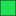

<!doctype html>
<html lang="en">
    <head>
        <meta charset="utf-8">
        <meta http-equiv="X-UA-Compatible" content="IE=edge">
        <meta name="viewport" content="initial-scale=1,user-scalable=no,maximum-scale=1,width=device-width">
        <meta name="mobile-web-app-capable" content="yes">
        <meta name="apple-mobile-web-app-capable" content="yes">
        <link rel="stylesheet" href="css/leaflet.css">
        <link rel="stylesheet" href="css/L.Control.Layers.Tree.css">
        <link rel="stylesheet" href="css/qgis2web.css">
        <link rel="stylesheet" href="css/fontawesome-all.min.css">
        <link rel="stylesheet" href="css/leaflet-control-geocoder.Geocoder.css">
        <style>
        html, body, #map {
            width: 100%;
            height: 100%;
            padding: 0;
            margin: 0;
        }
        </style>
        <title>Mapa Interactivo</title>
    </head>
    <body>
        <div id="map">
        </div>
        <script src="js/qgis2web_expressions.js"></script>
        <script src="js/leaflet.js"></script>
        <script src="js/L.Control.Layers.Tree.min.js"></script>
        <script src="js/leaflet.rotatedMarker.js"></script>
        <script src="js/leaflet.pattern.js"></script>
        <script src="js/leaflet-hash.js"></script>
        <script src="js/Autolinker.min.js"></script>
        <script src="js/rbush.min.js"></script>
        <script src="js/labelgun.min.js"></script>
        <script src="js/labels.js"></script>
        <script src="js/leaflet-control-geocoder.Geocoder.js"></script>
        <script src="data/Sequia_1.js"></script>
        <script src="data/Autopista_2.js"></script>
        <script src="data/Ferrocarril_3.js"></script>
        <script src="data/LimiteMpiodeDurango_4.js"></script>
        <script>
        var map = L.map('map', {
            zoomControl:false, maxZoom:28, minZoom:1
        }).fitBounds([[22.898499893622574,-106.64912087483383],[25.02638569658044,-102.69035619281597]]);
        var hash = new L.Hash(map);
        map.attributionControl.setPrefix('<a href="https://github.com/tomchadwin/qgis2web" target="_blank">qgis2web</a> &middot; <a href="https://leafletjs.com" title="A JS library for interactive maps">Leaflet</a> &middot; <a href="https://qgis.org">QGIS</a>');
        var autolinker = new Autolinker({truncate: {length: 30, location: 'smart'}});
        // remove popup's row if "visible-with-data"
        function removeEmptyRowsFromPopupContent(content, feature) {
         var tempDiv = document.createElement('div');
         tempDiv.innerHTML = content;
         var rows = tempDiv.querySelectorAll('tr');
         for (var i = 0; i < rows.length; i++) {
             var td = rows[i].querySelector('td.visible-with-data');
             var key = td ? td.id : '';
             if (td && td.classList.contains('visible-with-data') && feature.properties[key] == null) {
                 rows[i].parentNode.removeChild(rows[i]);
             }
         }
         return tempDiv.innerHTML;
        }
        // add class to format popup if it contains media
		function addClassToPopupIfMedia(content, popup) {
			var tempDiv = document.createElement('div');
			tempDiv.innerHTML = content;
			if (tempDiv.querySelector('td img')) {
				popup._contentNode.classList.add('media');
					// Delay to force the redraw
					setTimeout(function() {
						popup.update();
					}, 10);
			} else {
				popup._contentNode.classList.remove('media');
			}
		}
        var title = new L.Control({'position':'topright'});
        title.onAdd = function (map) {
            this._div = L.DomUtil.create('div', 'info');
            this.update();
            return this._div;
        };
        title.update = function () {
            this._div.innerHTML = '<h2>Mapa Interactivo</h2>';
        };
        title.addTo(map);
        var zoomControl = L.control.zoom({
            position: 'topleft'
        }).addTo(map);
        var bounds_group = new L.featureGroup([]);
        function setBounds() {
        }
        map.createPane('pane_ESRISatellite_0');
        map.getPane('pane_ESRISatellite_0').style.zIndex = 400;
        var layer_ESRISatellite_0 = L.tileLayer('https://server.arcgisonline.com/ArcGIS/rest/services/World_Imagery/MapServer/tile/{z}/{y}/{x}', {
            pane: 'pane_ESRISatellite_0',
            opacity: 1.0,
            attribution: '',
            minZoom: 1,
            maxZoom: 28,
            minNativeZoom: 0,
            maxNativeZoom: 20
        });
        layer_ESRISatellite_0;
        map.addLayer(layer_ESRISatellite_0);
        function pop_Sequia_1(feature, layer) {
            var popupContent = '<table>\
                    <tr>\
                        <td colspan="2">' + (feature.properties['VALOR_INDI'] !== null ? autolinker.link(feature.properties['VALOR_INDI'].toLocaleString()) : '') + '</td>\
                    </tr>\
                    <tr>\
                        <td colspan="2">' + (feature.properties['DESCRIPCIO'] !== null ? autolinker.link(feature.properties['DESCRIPCIO'].toLocaleString()) : '') + '</td>\
                    </tr>\
                    <tr>\
                        <td colspan="2">' + (feature.properties['OBSERVACIO'] !== null ? autolinker.link(feature.properties['OBSERVACIO'].toLocaleString()) : '') + '</td>\
                    </tr>\
                </table>';
            var content = removeEmptyRowsFromPopupContent(popupContent, feature);
			layer.on('popupopen', function(e) {
				addClassToPopupIfMedia(content, e.popup);
			});
			layer.bindPopup(content, { maxHeight: 400 });
        }

        function style_Sequia_1_0(feature) {
            switch(String(feature.properties['VALOR_INDI'])) {
                case 'Bajo':
                    return {
                pane: 'pane_Sequia_1',
                opacity: 1,
                color: 'rgba(35,35,35,1.0)',
                dashArray: '',
                lineCap: 'butt',
                lineJoin: 'miter',
                weight: 1.0, 
                fill: true,
                fillOpacity: 1,
                fillColor: 'rgba(32,224,83,1.0)',
                interactive: true,
            }
                    break;
                case 'Medio':
                    return {
                pane: 'pane_Sequia_1',
                opacity: 1,
                color: 'rgba(35,35,35,1.0)',
                dashArray: '',
                lineCap: 'butt',
                lineJoin: 'miter',
                weight: 1.0, 
                fill: true,
                fillOpacity: 1,
                fillColor: 'rgba(193,229,47,1.0)',
                interactive: true,
            }
                    break;
                case 'Alto':
                    return {
                pane: 'pane_Sequia_1',
                opacity: 1,
                color: 'rgba(35,35,35,1.0)',
                dashArray: '',
                lineCap: 'butt',
                lineJoin: 'miter',
                weight: 1.0, 
                fill: true,
                fillOpacity: 1,
                fillColor: 'rgba(255,127,0,1.0)',
                interactive: true,
            }
                    break;
                case 'Muy alto':
                    return {
                pane: 'pane_Sequia_1',
                opacity: 1,
                color: 'rgba(35,35,35,1.0)',
                dashArray: '',
                lineCap: 'butt',
                lineJoin: 'miter',
                weight: 1.0, 
                fill: true,
                fillOpacity: 1,
                fillColor: 'rgba(227,26,28,1.0)',
                interactive: true,
            }
                    break;
            }
        }
        map.createPane('pane_Sequia_1');
        map.getPane('pane_Sequia_1').style.zIndex = 401;
        map.getPane('pane_Sequia_1').style['mix-blend-mode'] = 'normal';
        var layer_Sequia_1 = new L.geoJson(json_Sequia_1, {
            attribution: '',
            interactive: true,
            dataVar: 'json_Sequia_1',
            layerName: 'layer_Sequia_1',
            pane: 'pane_Sequia_1',
            onEachFeature: pop_Sequia_1,
            style: style_Sequia_1_0,
        });
        bounds_group.addLayer(layer_Sequia_1);
        function pop_Autopista_2(feature, layer) {
            var popupContent = '<table>\
                    <tr>\
                        <td colspan="2">' + (feature.properties['NOMBRE'] !== null ? autolinker.link(feature.properties['NOMBRE'].toLocaleString()) : '') + '</td>\
                    </tr>\
                </table>';
            var content = removeEmptyRowsFromPopupContent(popupContent, feature);
			layer.on('popupopen', function(e) {
				addClassToPopupIfMedia(content, e.popup);
			});
			layer.bindPopup(content, { maxHeight: 400 });
        }

        function style_Autopista_2_0() {
            return {
                pane: 'pane_Autopista_2',
                opacity: 1,
                color: 'rgba(51,160,44,1.0)',
                dashArray: '',
                lineCap: 'square',
                lineJoin: 'bevel',
                weight: 1.0,
                fillOpacity: 0,
                interactive: true,
            }
        }
        map.createPane('pane_Autopista_2');
        map.getPane('pane_Autopista_2').style.zIndex = 402;
        map.getPane('pane_Autopista_2').style['mix-blend-mode'] = 'normal';
        var layer_Autopista_2 = new L.geoJson(json_Autopista_2, {
            attribution: '',
            interactive: true,
            dataVar: 'json_Autopista_2',
            layerName: 'layer_Autopista_2',
            pane: 'pane_Autopista_2',
            onEachFeature: pop_Autopista_2,
            style: style_Autopista_2_0,
        });
        bounds_group.addLayer(layer_Autopista_2);
        function pop_Ferrocarril_3(feature, layer) {
            var popupContent = '<table>\
                    <tr>\
                        <td colspan="2">' + (feature.properties['fid'] !== null ? autolinker.link(feature.properties['fid'].toLocaleString()) : '') + '</td>\
                    </tr>\
                    <tr>\
                        <td colspan="2">' + (feature.properties['NOMBRE_VIA'] !== null ? autolinker.link(feature.properties['NOMBRE_VIA'].toLocaleString()) : '') + '</td>\
                    </tr>\
                </table>';
            var content = removeEmptyRowsFromPopupContent(popupContent, feature);
			layer.on('popupopen', function(e) {
				addClassToPopupIfMedia(content, e.popup);
			});
			layer.bindPopup(content, { maxHeight: 400 });
        }

        function style_Ferrocarril_3_0() {
            return {
                pane: 'pane_Ferrocarril_3',
                opacity: 1,
                color: 'rgba(31,120,180,1.0)',
                dashArray: '',
                lineCap: 'square',
                lineJoin: 'bevel',
                weight: 1.0,
                fillOpacity: 0,
                interactive: true,
            }
        }
        map.createPane('pane_Ferrocarril_3');
        map.getPane('pane_Ferrocarril_3').style.zIndex = 403;
        map.getPane('pane_Ferrocarril_3').style['mix-blend-mode'] = 'normal';
        var layer_Ferrocarril_3 = new L.geoJson(json_Ferrocarril_3, {
            attribution: '',
            interactive: true,
            dataVar: 'json_Ferrocarril_3',
            layerName: 'layer_Ferrocarril_3',
            pane: 'pane_Ferrocarril_3',
            onEachFeature: pop_Ferrocarril_3,
            style: style_Ferrocarril_3_0,
        });
        bounds_group.addLayer(layer_Ferrocarril_3);
        function pop_LimiteMpiodeDurango_4(feature, layer) {
            var popupContent = '<table>\
                </table>';
            var content = removeEmptyRowsFromPopupContent(popupContent, feature);
			layer.on('popupopen', function(e) {
				addClassToPopupIfMedia(content, e.popup);
			});
			layer.bindPopup(content, { maxHeight: 400 });
        }

        function style_LimiteMpiodeDurango_4_0() {
            return {
                pane: 'pane_LimiteMpiodeDurango_4',
                opacity: 1,
                color: 'rgba(31,120,180,1.0)',
                dashArray: '',
                lineCap: 'square',
                lineJoin: 'bevel',
                weight: 2.0,
                fillOpacity: 0,
                interactive: true,
            }
        }
        map.createPane('pane_LimiteMpiodeDurango_4');
        map.getPane('pane_LimiteMpiodeDurango_4').style.zIndex = 404;
        map.getPane('pane_LimiteMpiodeDurango_4').style['mix-blend-mode'] = 'normal';
        var layer_LimiteMpiodeDurango_4 = new L.geoJson(json_LimiteMpiodeDurango_4, {
            attribution: '',
            interactive: true,
            dataVar: 'json_LimiteMpiodeDurango_4',
            layerName: 'layer_LimiteMpiodeDurango_4',
            pane: 'pane_LimiteMpiodeDurango_4',
            onEachFeature: pop_LimiteMpiodeDurango_4,
            style: style_LimiteMpiodeDurango_4_0,
        });
        bounds_group.addLayer(layer_LimiteMpiodeDurango_4);
        map.addLayer(layer_LimiteMpiodeDurango_4);
        var osmGeocoder = new L.Control.Geocoder({
            collapsed: true,
            position: 'topleft',
            text: 'Search',
            title: 'Testing'
        }).addTo(map);
        document.getElementsByClassName('leaflet-control-geocoder-icon')[0]
        .className += ' fa fa-search';
        document.getElementsByClassName('leaflet-control-geocoder-icon')[0]
        .title += 'Search for a place';
        var overlaysTree = [
            {label: ' Limite Mpio de Durango', layer: layer_LimiteMpiodeDurango_4},
            {label: ' Ferrocarril', layer: layer_Ferrocarril_3},
            {label: ' Autopista', layer: layer_Autopista_2},
            {label: 'Sequia<br /><table><tr><td style="text-align: center;"></td><td>Bajo</td></tr><tr><td style="text-align: center;"></td><td>Medio</td></tr><tr><td style="text-align: center;"></td><td>Alto</td></tr><tr><td style="text-align: center;"></td><td>Muy alto</td></tr></table>', layer: layer_Sequia_1},
            {label: "ESRI Satellite", layer: layer_ESRISatellite_0},]
        var lay = L.control.layers.tree(null, overlaysTree,{
            //namedToggle: true,
            //selectorBack: false,
            //closedSymbol: '&#8862; &#x1f5c0;',
            //openedSymbol: '&#8863; &#x1f5c1;',
            //collapseAll: 'Collapse all',
            //expandAll: 'Expand all',
            collapsed: true,
        });
        lay.addTo(map);
        setBounds();
        </script>
    </body>
</html>
